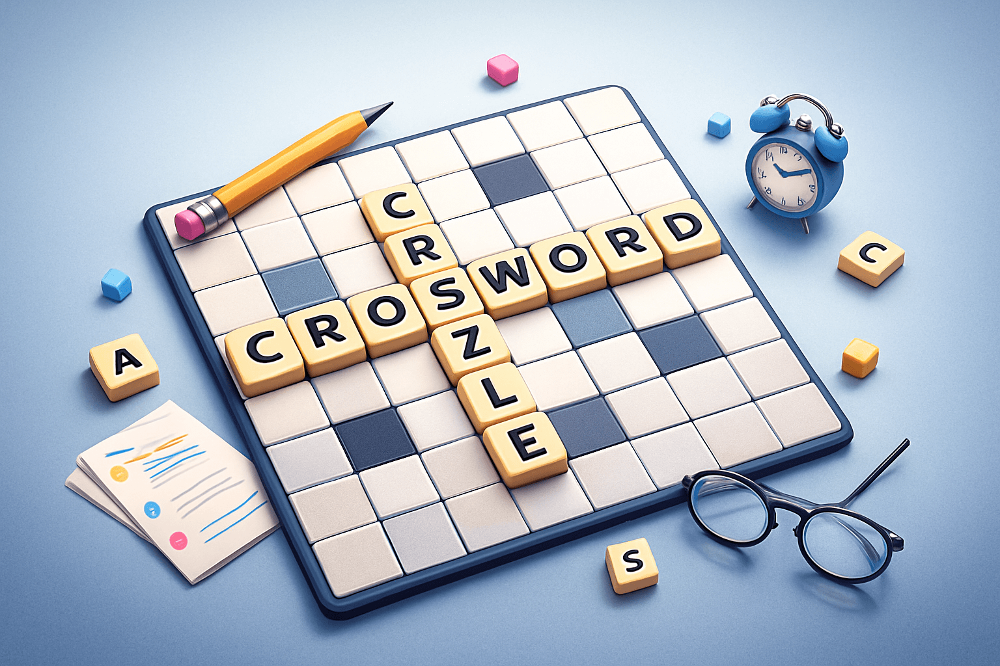

Yeni başlayanlar için kapsamlı rehber

Crossword, Türkçede bilinen adıyla çapraz bulmaca, verilen ipuçlarına uygun kelimeleri yatay ve dikey kutulara yerleştirme temeline dayanan bir kelime bulmacasıdır.
1913’te ilk modern örneği çıkan crossword günümüzde hem gazetelerde hem mobil uygulamalarda en popüler bulmaca türlerinden biridir.
Temel mantık, ipuçlarını doğru yorumlamak ve kelimeleri çapraz bir şekilde yerleştirirken diğer kelimelerden gelen harflerden yardım almaktır.
Kısa cevaplar bulmacayı hızlı açar.
Bir kelimeden gelen harf, başka kelimeyi açar ve zincirleme ilerleme sağlar.
Birçok bulmacanın ortak bir teması vardır. Tema tahmin etmeyi kolaylaştırır.
Yeni başlayanların sık yaptığı hatalar şunlardır:
WordSaga Crossword, klasik çapraz bulmacayı modern bir yapıya dönüştürüyor. Zengin görsel tasarım, gelişmiş ipucu sistemi ve ödül mekanikleri ile yeni başlayanlardan deneyimli oyunculara kadar herkes için keyifli bir deneyim sunuyor.
WordSaga Crossword’u ücretsiz denemek istersen, iOS veya Android için indirebilirsin.
Crossword yani çapraz bulmaca çözmek hem zihni dinlendiren hem de kelime dağarcığını geliştiren harika bir aktivitedir. WordSaga Crossword ile bu deneyime modern ve keyifli bir başlangıç yapabilirsiniz.